Totalcar is a well known car show with many seasons behind them, two very iconic hosts and very solid fan base, that like the show just as it is - with lots of cars, gadgets and a ton of craziness. But what happens when a car show like this moves to another channel?
Key Visuals
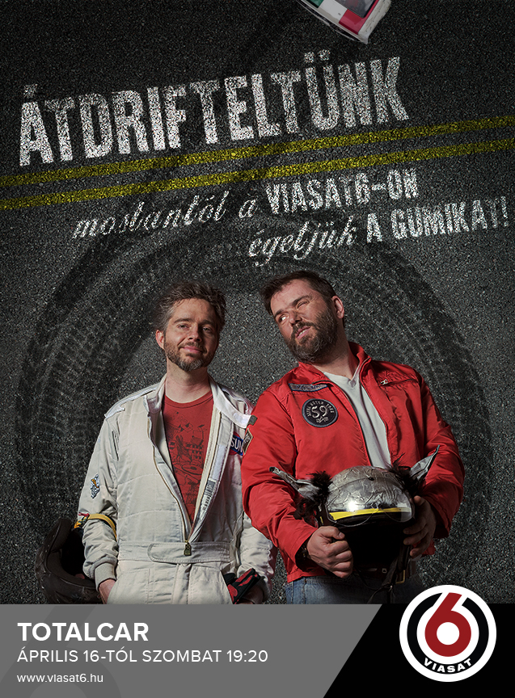 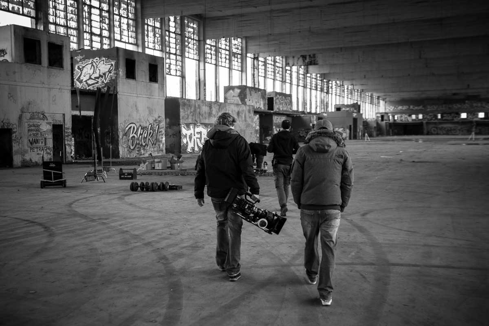 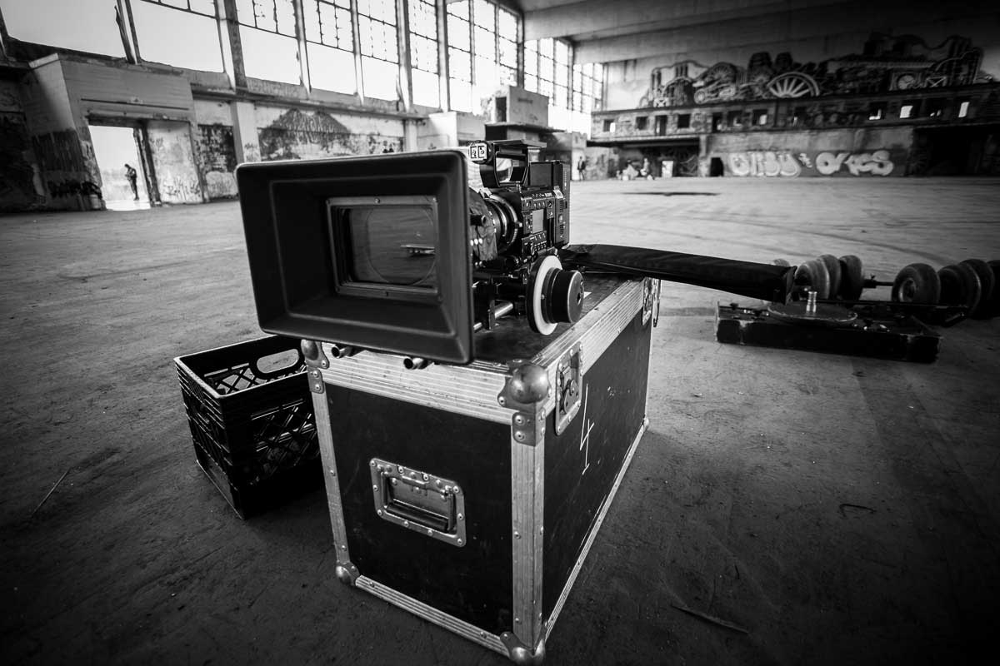 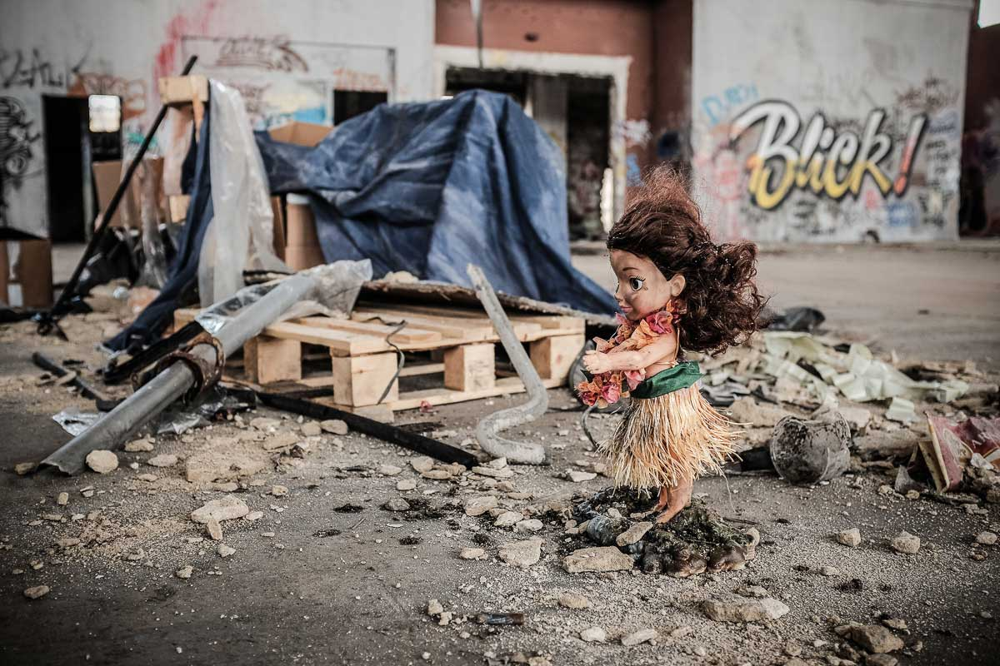
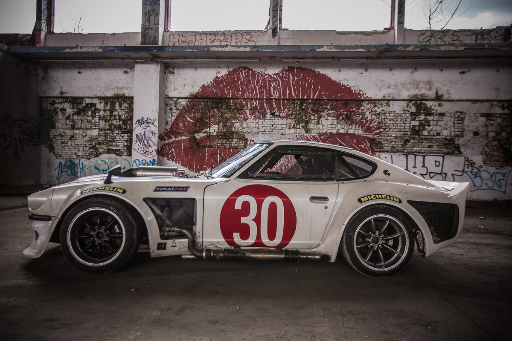
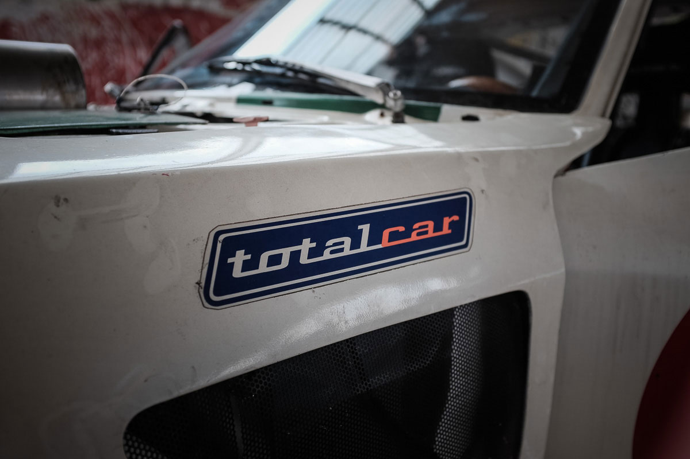
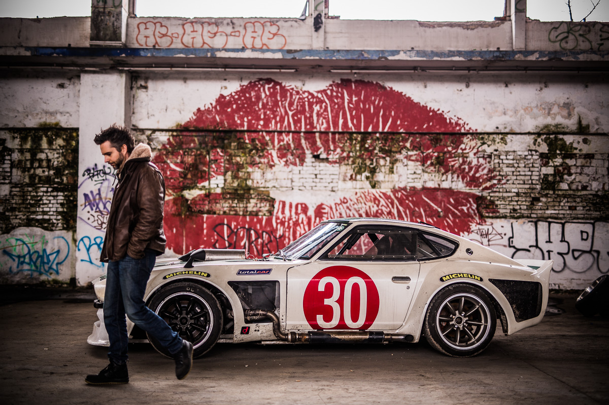
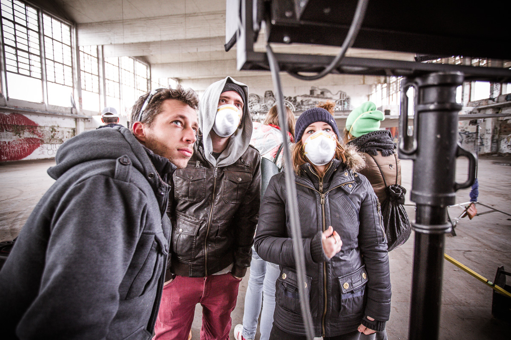
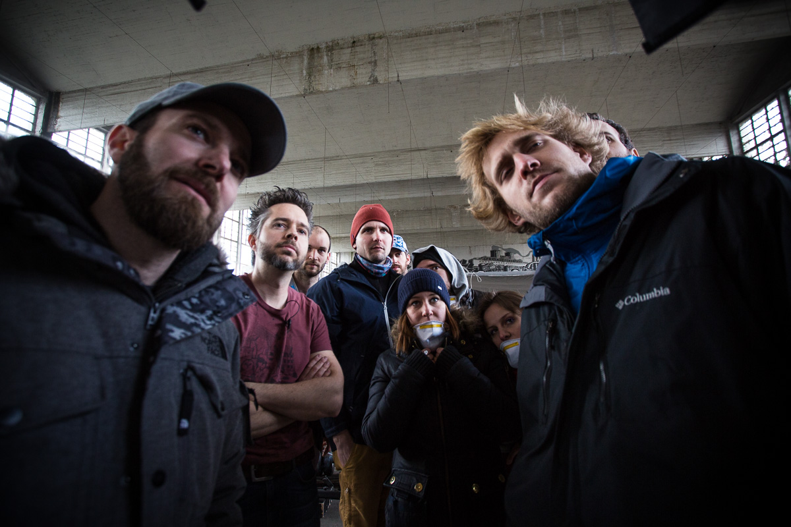
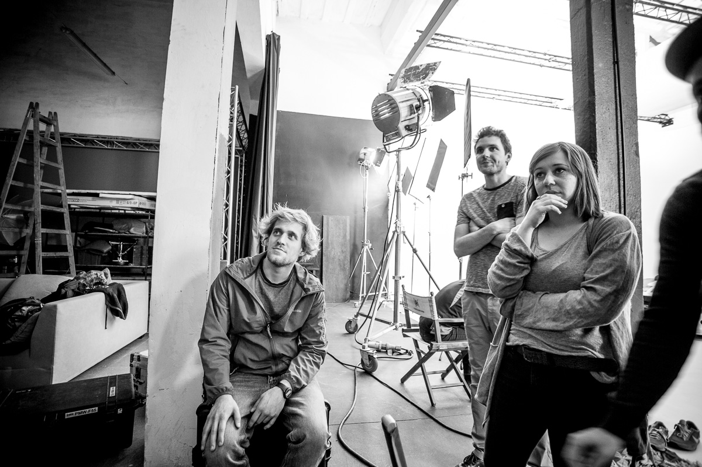
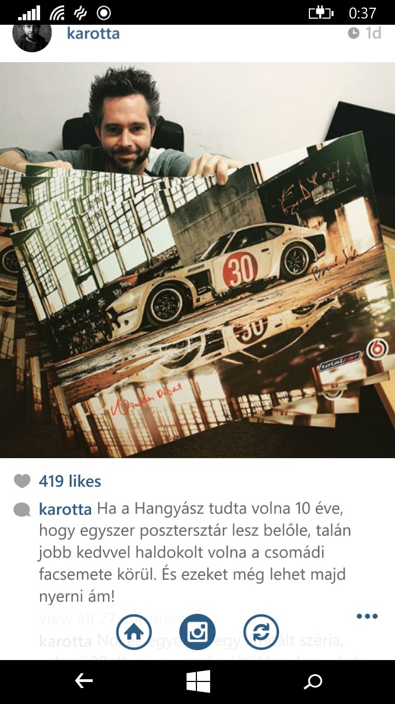